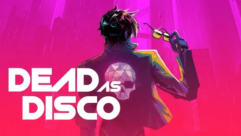

Brain Jar Games'in geliştirdiği Dead as Disco, müzik ritmine göre senkronize olan kombolarla dövüştüğünüz bir Beat 'Em Up. Charlie Disco olarak eski band arkadaşlarınıza karşı neon renkli sahnelerde hayatta kalmaya çalışıyorsunuz. Infinite Disco moduyla kendi şarkılarınızı da oyuna dahil edebilirsiniz.
SİSTEM GEREKSİNİMLERİ
Minimum
- OS: Windows 10 (64-bit)
- İşlemci: Intel Core i5-6500 veya AMD Ryzen 5 1400
- RAM: 8 GB
- Ekran Kartı: Nvidia GTX 1060 6GB
- Disk: 20 GB boş alan
- DirectX: Sürüm 12
Önerilen
- OS: Windows 10 / 11 (64-bit)
- İşlemci: Intel Core i7 veya AMD Ryzen 7
- RAM: 16 GB
- Ekran Kartı: Nvidia RTX 2060
- Disk: 20 GB boş alan (SSD önerilir)
- DirectX: Sürüm 12
LİNKLER
TORRENT LİNKLERİ
RESMİ İNDİRME LİNKLERİ
BENZER OYUNLAR
Dead as Disco Nedir?
Brain Jar Games tarafından geliştirilen Dead as Disco, bağımsız oyun sahnesinde dikkat çeken bir ritim tabanlı Beat 'Em Up. PC'de oynanabilen yapım, neon renkli görselleri ve müzik senkronizasyonlu dövüş mekanikleriyle öne çıkıyor. Oyuncular, efsanevi Dead as Disco grubunun ölen davulcusu Charlie Disco olarak eski band arkadaşları olan Idol'lere karşı savaşıyor. Her yumruk, tekme ve kombo müzik ritmine göre senkronize oluyor. Infinite Disco modunda kendi şarkılarınızı ekleyerek kişiselleştirilmiş dövüş deneyimi yaşayabiliyorsunuz.
Oynanış Özellikleri
- Charlie Disco olarak eski band arkadaşlarınız olan Idol'lere karşı müzik senkronizasyonlu kombolarla savaşın.
- Infinite Disco modunda kendi müziğinizi ekleyerek sonsuz dövüş deneyimi yaşayın.
- Neon renkli görseller ve dinamik dövüş mekanikleriyle aksiyon dolu anlar.
- Beat Kune Do sistemiyle hızlı refleksler ve ritim duygusu gerektiren dövüşler.
- 30'dan fazla şarkı içeren orijinal soundtrack ve lisanslı parçalar.
- Rockstar modasıyla karakterinizi özelleştirin ve The Encore kulübünü restore edin.
Dead as Disco Nasıl Oynanır?
Oyun resmi olarak Türkçe dil desteği sunmamaktadır; oynamak için İngilizce arayüz kullanmanız gerekir. Ancak oyunun temel mekanikleri görsel olarak oldukça anlaşılırdır.
Güvenlik Durumu
Tüm dosyalar virüs taramasından geçmiştir.